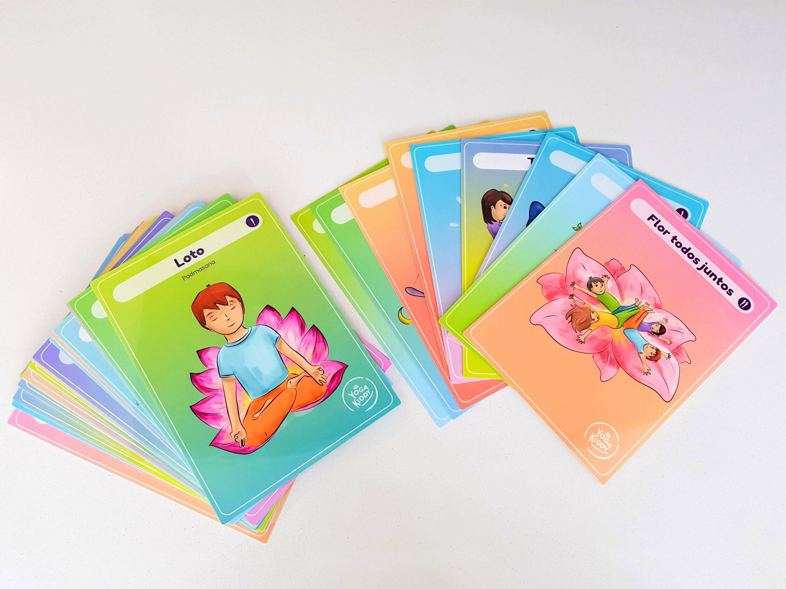

Una manera de acercar el yoga a la infancia, es a través del uso de material visual pudiendo responder también a la necesidad de percibir el mundo de los colores y las formas. Las láminas YogaKiddy se convierten en una opción de juego constante donde existen variados usos para integrar el yoga a sus vidas. Ellas nos permiten acompañar dicho proceso con un material atractivo y con multiplicidad de empleos en la planificación de actividades.
Podemos aproximar el trabajo de asanas de manera contextualizada a la esencia de la infancia, respetando lo lúdico, lo sensorial y lo innovador, favoreciendo el cuidado de nuestro cuerpo para mantener una vida saludable y feliz.
Juego tradicional “El luche”
¿Quién no jugó al luche durante su infancia? Este juego clásico es una posibilidad donde los niños y niñas conectarán con la historia popular de nuestro país y además replicarán una manera sencilla de jugar.
La idea es que puedas dibujar un luche en una superficie segura y que no sea resbalosa. Si no puedes hacerlo con tiza, te sugiero que lo hagas con masking tape. Cuando ya tengas esto confeccionado, puedes situar las láminas YogaKiddy en cada casillero del luche, adhiriéndolas a la superficie con el mismo masking o con lo que estimes necesario.
Consignas que puedas entregar:
Puedes pedirle a los niños/as que primeramente vayan pasando por el luche y que cuando digas stop, en el casillero que quedaron, deben efectuar la postura que ahí se encuentra.
Con la ayuda de un dado, cada niño/a lanza para saber en qué número hacer la pausa y mostrar a sus pares la postura.
El congelado del Yoga
Este juego también nos conecta con la historia de nuestra infancia como país, ya que recuerda una canción que estuvo presente en muchos cumpleaños, salas de clases y todo encuentro infantil. Utilizando la canción “Congelado” de Cachureos, puedes permitir que niños y niñas aprenden sobre posturas de yoga de manera lúdica y bailable.
Cada vez que la canción diga congelado, debes pausar la música para así dar más tiempo a la acción de observar la lámina presentada y luego que puedan hacerla con su cuerpo, sosteniéndola el tiempo que estimes necesario.
Puedes ir entregando consignas que mientras bailan antes de congelar pueden:
- Ir bailando como animales.
- Bailar sobre una pista de hielo.
- Bailar sobre un charco de lobo, etc.